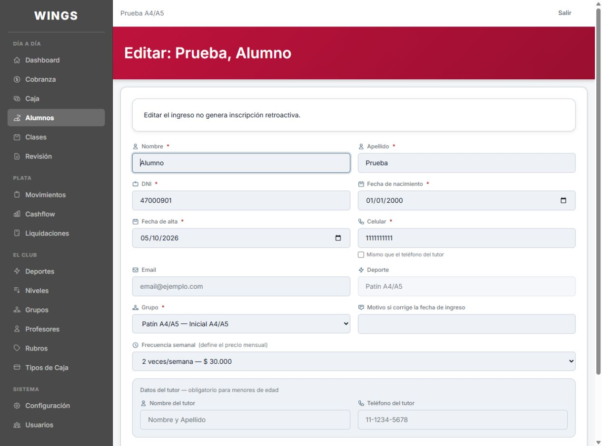
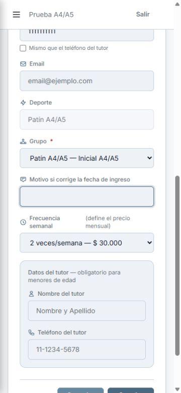

Retoque posterior a la entrega 373f9b4: rótulo arriba con ícono de Descripción y cuadro abajo, dentro de la grilla y con el mismo formato. Sin cambios de CSS ni de reglas.
Hecho (Cx), a revisar. Carlos aprobó estas capturas el 05/10 para commit y push. Sin despliegue.
Capturas reales con datos ficticios en la base propia de Codex. Suite completa final, incluyendo A37 de Gemini: 438 aprobadas, 1 omitida, 2960 aserciones (439 pruebas). Después del ícono: 11 pruebas específicas aprobadas, 39 aserciones.

Desplazada hasta el campo; menú cerrado.
